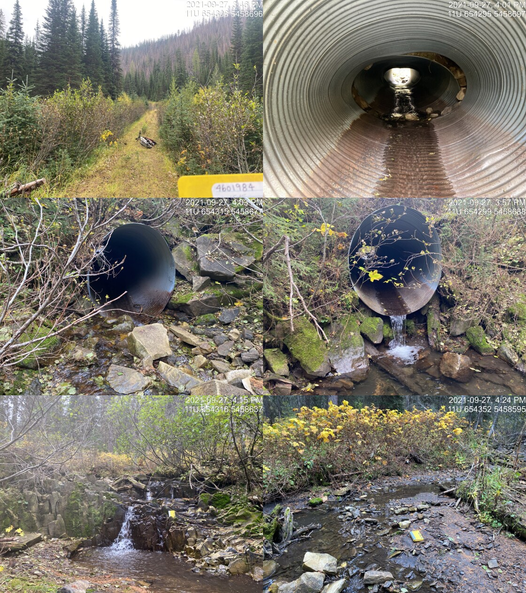

Appendix - 197796 - Tributary to Lodgepole Creek
Site Location
PSCIS crossing 197796 is located on a tributary to Lodgepole Creek 30km south-east Fernie on an unnamed spur road. The site was located within the Wigwam Flats - Mt. Broadwood/Sportsmans Ridge access management area with a locked gate to prevent entry by motorized vehicles (“Map Wigwam Flats Mt. Boadwood Sprotsmans Ridge” 2021). The access gate is located approximately 3km up from the junction of the Lodgepole FSR and the Wigwam FSR. The culvert was located 5.5km upstream from the confluence with Lodgepole Creek. No information was available regarding road tenure.
Background
At crossing 197796, tributary to Lodgepole Creek is a third order stream with a watershed area upstream of the crossing of approximately 3.8km2. The elevation of the north-west facing watershed ranges from a maximum of 2318m to 1548m near the crossing (Table 5.24). Upstream of the stream crossing, no fish have previously been recorded (MoE 2020b; Norris 2020).
fpr_tab_wshd_sum(site_id = my_site) %>%
my_kable(caption_text = paste0('Summary of derived upstream watershed statistics for PSCIS crossing ', my_site, '.'),
footnote_text = 'Elev P60 = Elevation at which 60% of the watershed area is above')| Site | Area Km | Elev Site | Elev Min | Elev Max | Elev Mean | Elev Median | Elev P60 |
|---|---|---|---|---|---|---|---|
| 197796 | 3.8 | 1608 | 1548 | 2318 | 1932 | 1940 | 1887 |
| * Elev P60 = Elevation at which 60% of the watershed area is above |
PSCIS crossing 197796 was earmarked for assessment by Canadian Wildlife Federation along with PSCIS site 197795 due to analysis of bcfishpass modelling which indicated potentially large quantities of habitat suitable for westslope cutthrout trout spawning and rearing within the greater watershed including upstream of PSCIS bridge crossing 197795 which was located 1.9km upstream from the confluence with Lodgepole Creek. Upstream of crossing 197796, there was 0.5km of habitat modelled as less than 8% gradient (Table 5.25. Evidence of a recent forest fire was apparent on the west side of the valley. A map of the watershed is provided in map attachment 082G.108.
print_tab_summary_bcfp()| Habitat | Potential | Remediation Gain | Remediation Gain (%) |
|---|---|---|---|
| WCT Spawning (km) | 0.0 | 0.0 | – |
| WCT Rearing (km) | 0.0 | 0.0 | – |
| WCT Stream (km) | 1.2 | 1.0 | 83 |
| WCT Network (km) | 1.2 | 1.0 | 83 |
| WCT Lake Reservoir (ha) | – | 0.0 | – |
| WCT Wetland (ha) | – | 0.0 | – |
| WCT Slopeclass03 Waterbodies (km) | 0.0 | 0.0 | – |
| WCT Slopeclass03 (km) | 0.0 | 0.0 | – |
| WCT Slopeclass05 (km) | 0.0 | 0.0 | – |
| WCT Slopeclass08 (km) | 0.5 | 0.5 | 100 |
| WCT Slopeclass15 (km) | 0.5 | 0.4 | 80 |
| WCT Slopeclass22 (km) | 0.2 | 0.1 | 50 |
| * Model data is preliminary and subject to adjustments. | |||
| † Modelled rearing habitat estimates do not currently include linear lengths of centrelines within lakes and wetlands. |
Stream Characteristics at Crossing
At the time of the survey, the culvert was un-embedded, non-backwatered and ranked as a barrier to upstream fish passage according to the provincial protocol (MoE 2011b). The pipe was extensively damaged (seperating within the centre of the road),1.6m in diameter with a length of 14m, a culvert slope of 5%, a stream width ratio of 2.4 and an outlet drop of 0.6m (Table 5.26).
##this is useful to get some comments for the report
hab_site %>% filter(site == my_site & location == 'ds') %>% pull(comments)
my_priority <- my_priority_info()Stream Characteristics Downstream
The stream was surveyed downstream from the culvert for 125m (Figures 5.29 - 5.30). Total cover amount was rated as NA with large woody debris dominant. Cover was also present as small woody debris, boulders, undercut banks, deep pools, and overhanging vegetation (Table 5.27). The average channel width was 4.1m and the average gradient was 7%. The dominant substrate was large rock/bedrock with boulders subdominant. There steep sections to ~15% with steps to 1.8m in height created by large woody debris and bedrock throughout the area surveyed. The habitat was rated as low value for resident salmonid rearing due primarily to the steep grades.
Stream Characteristics Upstream
The stream was surveyed immediately upstream from 197796 for approximately 110m to a 2.4m high rock falls that represents a permanent barrier to upstream fish passage in the watershed (Figures 5.31 - 5.32). Within the area surveyed, total cover amount was rated as NA with large woody debris dominant. Cover was also present as small woody debris, boulders, undercut banks, and overhanging vegetation (Table 5.27). The average channel width was 3.8m, the average wetted width was 1.9m and the average gradient was 8.5%. The dominant substrate was large rock/bedrock with boulders subdominant. Habitat value was rated as low value resident salmonid rearing and spawning due to the small amount of habitat available.
Structure Remediation and Cost Estimate
Should restoration/maintenance activities proceed at the site, replacement of PSCIS crossing 197796 with a bridge (12m span) is recommended. The cost of the work is estimated at $240,000 for a cost benefit of 0.2 linear m/$1000 and 0.9m2/$1000.
Conclusion
There was 197796 is 0.1km of habitat upstream of crossing rated as low value for salmonid rearing and spawning. The road is within the Wigwam Flats - Mt. Broadwood/Sportsmans Ridge access management area and no information was available regarding road tenure. Crossing 197796 was observed to have extensive damage within the structure and was ranked as a low priority for proceeding to design for replacement. The site could also be considered for removal and road deactivation once silviculture obligations have been met in the area.
print_tab_summary()| Location and Stream Data |
|
Crossing Characteristics | – |
|---|---|---|---|
| Date | 2021-09-27 | Crossing Sub Type | Round Culvert |
| PSCIS ID | 197796 | Diameter (m) | 1.6 |
| External ID | – | Length (m) | 14 |
| Crew | AI | Embedded | No |
| UTM Zone | 11 | Depth Embedded (m) | – |
| Easting | 654301.7 | Resemble Channel | No |
| Northing | 5458678 | Backwatered | No |
| Stream | Tributary to Lodgepole Creek | Percent Backwatered | – |
| Road | Spur | Fill Depth (m) | 2 |
| Road Tenure | Unclassified | Outlet Drop (m) | 0.6 |
| Channel Width (m) | 3.8 | Outlet Pool Depth (m) | 0.8 |
| Stream Slope (%) | 8.5 | Inlet Drop | Yes |
| Beaver Activity | No | Slope (%) | 5 |
| Habitat Value | Low | Valley Fill | Deep Fill |
| Final score | 36 | Barrier Result | Barrier |
| Fix type | Replace with New Open Bottom Structure | Fix Span / Diameter | 12 |
| Photos: From top left clockwise: Road/Site Card, Barrel, Outlet, Downstream, Upstream, Inlet. | |||
| Comments: Gated access management area. Falls located ~60m upstream of the crossing. 15:45 |
tab_hab_summary %>%
filter(Site == my_site) %>%
# select(-Site) %>%
my_kable(caption_text = paste0('Summary of habitat details for PSCIS crossing ', my_site, '.')) | Site | Location | Length Surveyed (m) | Channel Width (m) | Wetted Width (m) | Pool Depth (m) | Gradient (%) | Total Cover | Habitat Value |
|---|---|---|---|---|---|---|---|---|
| 197796 | Upstream | 110 | 3.8 | 1.9 | 0.6 | 8.5 | – | low |
| 197796 | Downstream | 125 | 4.1 | 1.8 | 0.4 | 7.0 | – | low |
my_photo1 = pull_photo_by_str(str_to_pull = '_d1_')
my_caption1 = paste0('Typical habitat downstream of PSCIS crossing ', my_site, '.')grid::grid.raster(get_img(photo = my_photo1))Figure 5.29: Typical habitat downstream of PSCIS crossing 197796.
my_photo2 = pull_photo_by_str(str_to_pull = '_d2_')
my_caption2 = paste0('Habitat downstream of crossing ', my_site, '.')grid::grid.raster(get_img(photo = my_photo2))Figure 5.30: Habitat downstream of crossing 197796.
my_caption <- paste0('Left: ', my_caption1, ' Right: ', my_caption2)
knitr::include_graphics(get_img_path(photo = my_photo1))
knitr::include_graphics("fig/pixel.png")
knitr::include_graphics(get_img_path(photo = my_photo2))my_photo1 = pull_photo_by_str(str_to_pull = '_u1_')
my_caption1 = paste0('Habitat upstream of PSCIS crossing ', my_site, '.')grid::grid.raster(get_img(photo = my_photo1))Figure 5.31: Habitat upstream of PSCIS crossing 197796.
my_photo2 = pull_photo_by_str(str_to_pull = '_upstream')
my_caption2 = paste0('2.4m high rock falls located ~60m upstream of PSCIS crossing ', my_site, '.')grid::grid.raster(get_img(photo = my_photo2))Figure 5.32: 2.4m high rock falls located ~60m upstream of PSCIS crossing 197796.
my_caption <- paste0('Left: ', my_caption1, ' Right: ', my_caption2)
knitr::include_graphics(get_img_path(photo = my_photo1))
knitr::include_graphics("fig/pixel.png")
knitr::include_graphics(get_img_path(photo = my_photo2))knitr::opts_chunk$set(echo=FALSE, message=FALSE, warning=FALSE)
source('R/packages.R')
source('R/functions.R')
source('R/tables.R')my_site <- 197844